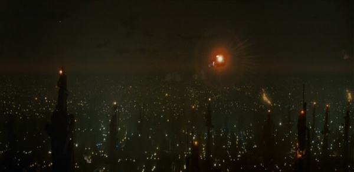

| Largeur 90% 70 | |
We are the dead : how and why are cyberpunk films dystopic ? is an investigation into the nature of cyberpunk as a genre of film and its inextricable link between the technofetishism of an increasingly inhuman future and the ubiquitous image of a corporate dystopia that accompanies it. Through an examination of three seminal works of cyberpunk film - Blade Runner (1982), Akira (1988) and Ghost in the Shell (1995) - in terms of aesthetics, plot and themes, it becomes apparent that not only are dystopian themes frequent throughout cyberpunk, but omnipresent throughout the history of mythology and fiction. Drawing parallels with Hellenic themes of hubris as the prototypical example of the dystopian civilisation, while citing examples of direct mythological and fictional references and influences within the aforementioned films, we come to realise that cyberpunk is a modern interpretation and projection of the problems of today into a speculative future - a mode not unique in the slightest to our modern era.
This is followed by a discussion of film noir's influence on Blade Runner and Ghost in the Shell, noting its absence in Akira. A theory is formulated regarding the interplay of an "above ground" & "below ground" aesthetic with the basic point of the films analysed, before being considered on a wider scale with fundamentally similar films such as the Ghost in the Shell-inspired The Matrix (1999) and the dystopian, but distinctly non-science fiction V for Vendetta (2005). A conclusion is reached that cyberpunk is necessarily dystopic, and that trying to remove the dystopia from cyberpunk would be like trying to separate the words "cyber" and "punk" from their compounded whole.
The streets, the arteries of this metropolis, run with bodies. Crowding together, they flow out of the city, toward a superstructure east of town. A factory. A fortress. Glancing at it the facade resembles the face of a skeleton. Smoke pours from the stacks high above the outer wall. The gates are open. A figure stands in the light before the entrance. Perfectly still, he waits. The crash of metal destroys the silence. One by one the Robots step forward, step into the light.
-- The Protomen, Hope Rides Alone.
A bleak future of rain-slicked steel, despotic corporate overlords and nightmare science gone wrong, the cyberpunk genre is arguably one of the darkest branches of speculative fiction. The genre appeals to me on a level that's hard to describe - which I will attempt to do throughout - a level that I seem to enjoy just for the sake of enjoyment. Is it that I truly want to see the world turn into a hell of acid rain, mile-high skylines and malevolent artificial intelligences ? Is it simply the sheer spectacle, or is it the opposite, perhaps the fact that it's a projection of the grim possibilities of our world in twenty, thirty years' time ?
What is cyberpunk ? Perhaps a term that may be more commonly known is steampunk, the idea of anachronistic modern and fictional technologies being discovered in the Victorian era. Though the word cyberpunk may have come first, steampunk's roots go back to the era it portrays - the work of Jules Verne and H. G. Wells being archetypical of the genre. Dieselpunk too, taking as its time period the aesthetics and tropes of 1920 through 1945. But these are retrofuturistic, anachronism incarnate, whereas cyberpunk is futurism. In its most basic definition, it is a postmodern genre focusing on a world similar to our own, but afflicted in ways by rapid technological advancement, resulting in some kind of change to society. Originally a literary genre (the name originates from a 1983 short story, Cyberpunk, by Bruce Bethke) it, along with the other "-punk" genres, now enjoy as diverse a selection of media as any other genre.
Short stories, graphic novels, video games, live action film, anime film and series, music and lots else besides have been the staging ground for cyberpunk in one way or another. Typical questions and themes brought up by cyberpunk include what makes us human, how would sufficiently advanced artificial beings be treated in comparison to humanity, and transhumanism vs. human conservatism. These are relatively complex themes for a genre that's filled with "simple" spectacle, body horror and dystopian vistas.
The three films that will be primarily referenced herein are Blade Runner (1982), Akira (1988) and Ghost in the Shell (1995). I have selected these due to their influences not only on each other, but on the existence of cyberpunk as a whole. They were some of the first, as it were. The word wasn't even in parlance when Blade Runner was released in 1982, and William Gibson's novel Neuromancer hadn't even been written :
"When I saw (the first twenty minutes of) Blade Runner, I figured my unfinished first novel was sunk, done for. Everyone would assume I'd copped my visual texture from this astonishingly fine-looking film."
-- William Gibson, 2003.
Blade Runner and Akira influenced Ghost in the Shell. Ghost in the Shell influenced The Matrix - "They showed me [Ghost in the Shell] and they said, 'we wanna do that for real'" (Joel Silver, producer of The Matrix, 2001) - which is probably the most well-known piece of modern western science fiction outside of the space opera genre. Two of these films are examples of Japanese animation, or anime, and have served as a "gateway" for many western audiences to experience anime and its comic-book companion, manga. As such these films are responsible for the dissemination of cyberpunk, dystopian and science fiction themes worldwide, and as such will be considered herein the prototypical urtext of the cyberpunk film, transcending mediums - the genre is what is relevant, not whether the piece is Japanese anime or western live-action.
In the near future - corporate networks reach out to the stars, electrons and light flow throughout the universe.
The advance of computerisation, however, has not yet wiped out nations and ethnic groups.
-- Ghost in the Shell, opening text.
Perhaps one way to define a dystopia is to define its polar opposite - the utopia. Both are words of Greek etymology, meaning bad and good place respectively. A utopia is seen to be a state of civilisation in which all problems have either been solved, or are easily solved, as M. Keith Booker & Anne-Marie Thomas (2009, p75) state "utopian thought attempts to envision a society in which the various social, political and economic ills of the real world have been solved, leaving an ideal realm of justice and tranquility". The polar opposite of this then seems to be a world in which the problems of the real world are heightened. Booker & Thomas agree :
"If utopian societies are typically designed to enable the maximum fulfilment of individual human potential, dystopian societies impose oppressive conditions that interfere with that fulfilment. These oppressive conditions are usually extensions or exaggerations of conditions that already exist in the real world" [emphasis own]
Nineteen Eighty-Four by George Orwell is the most common example of a dystopia in literature, providing, according to Booker & Thomas, "almost all of the central motifs associated with dystopian fiction. [...] certain mechanical applications of technology lend themselves directly to political oppression". If this could be considered a checklist of dystopian themes, then weighing them up against cyberpunk films to determine where they do - or do not - conform could prove valuable in assessing how and why cyberpunk films are - or aren't - dystopic.
Starting with beginnings, Ghost in the Shell opens with a luminous, green holographic city rising from an ocean of graphs, with disembodied voices declaring positions of police helicopters and road closures. While simple communication between police units is hardly new, the portrayal in such a futuristic fashion makes it clear that in the world of Ghost in the Shell, the government - and those charged with the enforcement of the government's rule - are at the bleeding edge of technology. Akira, meanwhile, opens with quite possibly the single most potent display of the power of technology - a seemingly nuclear explosion tearing another city apart. In setting up the story with an atomic cataclysm, the audience is given a great deal of implicit information - that this is a story which deals with an "aftermath" of some kind, on numerous levels. On the plot level, it shows the aftermath of the titular Akira's destruction of Tokyo, on an implied level it shows the aftermath of Japan's historical experiences with nuclear weapons. On Akira's release in 1988, it coincided with what Susan J. Napier (2001) considered Japan's "postwar peak of international influence and (mis)recognition, a period when many nations felt threatened by what they saw as Japan's emerging superpower status". This quasi-mirroring of reality fits in with Booker & Thomas' consideration that a dystopia often extends or exaggerates already extant conditions. Similarly, Blade Runner's opening is that of another cityscape. Paul M. Sammon (1996) describes it best :
"The opening shot of Blade Runner shows a vast industrial landscape, with cracking towers belching huge fireballs of gaseous petroleum waste while numerous Spinners fly overhead. In the background can be seen two Tyrell Pyramids, their air-travel warning lights blasting upward from the tips of these structures into the sky [...] This mammoth industrial wasteland, which the EEG crew came to nickname either 'the Hades landscape' or 'Ridley's Inferno', was intended to represent the industrialized suburbs which now surrounded the city of L.A. in 2019."
-- Paul M. Sammon, 1996, page 231.

Consciously extrapolating an existing city into the future - as done by Akira in the form of Neo Tokyo, and New Port City in Ghost in the Shell mimics Hong Kong - in this manner also fits the conventions laid out previously. Even on a basic level, the intentional connotations with Hell and Dante's Inferno are hardly indicative of any kind of positive society. Indeed, the fact that hellish inspiration can be found in Blade Runner is possibly indicative that the genre isn't solely as rooted in technology as it seems. Just as utopian themes have been inspired by ancient fiction and mythology ever since Plato wrote Republic (380-370 BC), dystopian themes have clearly been inspired by similarly ancient sources. As David Dryer, effects supervisor on Blade Runner, notes of another scene in the film :
"[Ridley] Scott was talking about this Batty elevator sequence and I said, 'oh, I get it. It's Orpheus, descending into Hell'. Ridley stopped for a second, turned around and looked up at me, and said, 'we're going to get along just fine'."
-- Paul M. Sammon, 1996, page 262.
These stories are not new. The existence of the Replicants in Blade Runner even allows the historical inspiration to cross over into technological territory. Eldon Tyrell was killed by the god-like technology he gave to mankind, just as Doctor Frankenstein was destroyed after creating his monster in the name of science, and just as Prometheus was destroyed by the origins of the fire he gifted to mankind. Themes of technology - even at the most basic level of fire itself - can be found throughout fiction and mythology, and are usually associated with man's hubris. Hubris seems to be a driving force throughout speculative fiction, and cyberpunk is no exception :
"The mythological Titan, Prometheus, challenged and enraged the gods by stealing fire to bestow on humans. [...] Prometheus's act of hubris is also Victor Frankenstein's and Tyrell's. Frankenstein desired to bestow on humans a gift for which they would thank him. Instead, his monstrous creation, desperately out of control, wreaks homicidal vengeance against his creator. So does Blade Runner's replicant, Roy Batty, against his creator, Tyrell."
-- Mary Jenkins, 1997.
The army in Akira's quest for control - the word used is in fact the English word 'control', or 'kontororu' as it is pronounced in Japanese - ends up destroying Tokyo. Twice. Humanity, it seems, doesn't learn from its mistakes, at least not in Akira. The Replicants of Blade Runner kill their own god-figure, and Rick Deckard's suspected Replicant nature brings up questions of what it means to be human, if the lines between what is human and what is artificial intelligence are so blurred. Ghost in the Shell continues this train of thought, culminating in the Puppet Master and the Major's mering, blending organic intelligence with artificial - none of which could happen without humanity creating the A.I. to begin with.
The dark, seedy and technological descriptions from the previous pages are not simply hyperbolic or exaggerated descriptions of the cyberpunk film - they are ubiquitous across all of cyberpunk, though its appearance is somewhat more unique to the genre than the thematic concept of dystopia. Even something as basic as the phrase "Matrix green" immediately connotes the hue and texture of that film. But there's an intriguing paradox to cyberpunk film's overall "look" - it's futuristic, but it has to be a future that's recognisable as what might be in however many years' time. While films like Star Wars (1977) are firmly set in a fantastical science fiction world far removed from our own and can afford to be outlandish in many ways, the cyberpunk world is one which is not just a speculation but an attempt at outright prediction of our future :
"As [Ridley] Scott points out, logic dictated many of the decisions in this area. "The most difficult problem for all of us involved the look of the film. The nightmare in my mind was that this 'look' would merely become an intelligent speculation concerning a city forty years in the future, and nothing more. Believe me, designing Blade Runner was more of a challenge than Alien, simply because it's much easier to create the environment for a space film rather than a project detailing life on Earth. In any event, I insisted that Blade Runner's final look be authentic, not just speculative. For instance, take clothes and cars, [...] fashion is always cyclical.""
-- Paul M. Sammon, 1996, pages 73-74.
In addition to its futuristic elements, Blade Runner contains a wide array of references to film noir, from the superficial to the visual to the plot itself. Rick Deckard (Harrison Ford) is a detective with a trench coat, gun and hardboiled dialogue, and encounters femme fatales while kissing one of them in front of a set of venetian blinds (an intentional homage on Ridley Scott's part).
"Added to the mystery and mythological ambiguity associated with Rachael is the shadow of the 40s, literally in her make-up, reminiscent of the mysterious femme fatale of film noir, associated with world weary detectives and black cities, such as Blade Runner's city, Los Angeles."
-- Mary Jenkins, 1997.
The film's dark, rain-sodden interplay of city lights and oppressive shadows are all evocative of the film noir genre, while the film itself is in part responsible for "Tech Noir", the name of the night club in James Cameron's The Terminator (1984) which would later become a synonym for cyberpunk in film as distinct from cyberpunk in literature. The driving force of Blade Runner is the inexorable link between the aesthetic and the thematic, the director saying as much himself : "there are certain moments in movies where the background can be as important as the actor. The design of a film is the script" (Paul M. Sammon. 1996, p71). Does, then, this extend to Ghost in the Shell, Akira and other cyberpunk works ?
Ghost in the Shell is quite self-conscious when it comes to Blade Runner-esque aesthetics :
"Ghost in the Shell owes as much to American science fiction, such as Ridley Scott's landmark 1982 science fiction film Blade Runner or William Gibson's classic 1980 [sic, recte 1984] cyberpunk novel Neuromancer as it does to any specific mecha anime [...] Ghost in the Shell's dystopian vision of an alienated, near-future world, shadowy government agencies and a dark, urban setting of rain-lashed skyscrapers all evoke Blade Runner."
-- Susan J. Napier, 2001, page 105.
Indeed, one could take stills from Ghost in the Shell and confuse them for an animated counterpart to Blade Runner. For Susan J. Napier, Ghost in the Shell is as much mecha as it is a "'cyberpunk-noir film' with elegiac, gothic, and even apocalyptic overtones" (p.105). But there is no scene-of-the-crime detective work, or trench coats, or femme fatales here, so how is Ghost in the Shell noir ? Here you get into "what is noir ?" territory. It might be better to suggest that Ghost in the Shell is noir only in its aesthetics, while the story itself deals with philosophical, theological and gender issues. Blade Runner asks these questions (at least in terms of "what does it mean to be a human in an increasingly technological age ?") but leaves them unanswered. Ghost in the Shell offers an answer.
In the noir world of Blade Runner, the detective is shaken but still fundamentally himself, the world essentially unchanged, in fitting with the dark and oppressive nature of film noir. In the world of Ghost in the Shell, quite possible everything has changed, and the noir aesthetic is simply that - aesthetic - and does not particularly bleed over into the world of the story. The Major's merging with the Puppet Master carries such broad theological implications, essentially the creation of a new kind of sentience. In Blade Runner, these concerns are purely thematic allegory. Eldon Tyrell is no god, merely a god-like figure to the Replicants. Akira takes this a step further with distinctly fantastical psychic characters, or 'espers' from the term ESP (extra-sensory perception), a world away from the other films' backgrounds in rigorous technological principles. This is reflected in its aesthetics, too, there is little in terms of film noir to be found in the world of Akira. The film's design is far more colourful than Ghost in the Shell and Blade Runner, almost seeming more realistic for it. There are no exaggerated, dark shadows or rain-slicked alleyways. This provides an almost disturbing contrast to the topics explored within the film, of body horror and massive psychic explosions destroying Tokyo (twice). This colour is used to disgusting effect in the climax of the film, where Tetsuo morphs into an unrecognisable, horrific mass of flesh, in full, gory colour and detail, leaving out no detail to the imagination and not an inch of his "body" is hidden by shadows. Akira embraces the cyberpunk, but not the tech noir. Blade Runner practically defines the comingling of these genres, and Ghost in the Shell straddles somewhere in between.
These three films I have used as case studies - Akira, Blade Runner & Ghost in the Shell - are in many ways fundamentally different, but are among the founding stones of the dystopian cyberpunk genre in film. Romantic comedies share a "look", as do many action movies - how is it that so niche a genre be so vastly different on numerous levels ? Though parallels can be drawn between Ghost in the Shell and Blade Runner, since the look of the former was based on the latter, Ghost in the Shell remains a film that takes on a far more intellectual theme :
"Kuasanagi's obvious femininity may be one reason the film seems imbued with a more ethereal quality than either the typical cyberpunk or mecha film. It goes well beyond the typical science fiction privileging the mechanical and the logical the world typically associated with 'masculine' discourse. Although it gives us an indubitable cyberpunk world replete with cyborgs, computers, robots and other mecha tropes, at the same time it is a world clearly imbued with a sense of otherness that seems remarkably feminine."
-- Susan J. Napier, 2001, page 115.
As a discourse on gender inside of a cyberpunk story, Ghost in the Shell takes on substantial weight, becoming something of a platform for far more complex themes than at first glance. In fact, even at first glance Ghost in the Shell isn't big on heavy-handedness. The climax of the film takes place in one Victorian, "crystal palace"-esque structure, in a scene lasting for a little under a third of the movie. The first and second acts of the film are bridged by a poetic series of images of Kusanagi moving about the city, accompanied by a seemingly-religious Japanese chant. Akira similarly tells a story in a cyberpunk world that is more about adolescence than it is about computers :
"Tetsuo's metamorphosis is both a literal and a symbolic one : from ordinary human boy to monstrous creature to, perhaps, a new universe; in other words, from impotence to total power. Tetsuo's new powers may also symbolize his development from adolescent into adult, especially since at the film's end he is identified by language rather than image, thus suggesting his entry into the Symbolic order."
-- Susan J. Napier, 2001, page 44.
In similar vein, Blade Runner, being as it was the "touchstone" for the emerging cyberpunk movement (Paul M. Sammon, 1996, page 325) provides its own deeper meaning :
"And despite its air of superficial diffidence, cyberpunk - also very much like Blade Runner - was, at heart, essentially moral art, deeply concerned with all the flaws, compromises, and ethical choices that will always haunt humanity no matter how exotic or futuristic the background against which human dramas are played out."
-- Paul M. Sammon, 1996, page 325.
This idea of the human drama that each of these films is concerned with - be it existential, spiritual, ecological, or a combination - does not rely on the dystopian cyberpunk setting. These themes can be explored in any number of ways, genres and media. But cyberpunk provides a relevance to these themes; it updates science fiction's portrayal of the concerns of the human condition and reflects the issues faced by the world of today. As such, the structure, pacing, plot and themes of these films differ in fundamental ways, ways that make the aesthetic an easy means of identifying these films as being similar to one another. My theory on this aesthetic ties the dystopian with the cyberpunk, a common visual and thematic element consistent with these films; the idea of an "above ground" and "below ground" motif.
Height plays a crucial role in these films, in my opinion, as it provides a subconscious, visual context and circumscribes the world of the story. For instance, Blade Runner's dishevelled, overpopulated streets are overshadowed by the Tyrell pyramids that dominate the 2019 Los Angeles landscape, evoking yet again his god-like role in the story of Blade Runner; "high above the spectre of this decaying city Tyrell leads operations from his Olympus" (Mary Jenkins. 1997). On the ground, the streets are foul and the air above is permeated with the omnipresent gaze of the police. Tyrell, meanwhile, exists in his own microcosm, his rooms decorated opulently in stark contrast to the subsistence of the thronged masses below :
"The design of Tyrell's office can also be read as a social statement. This set contains a great amount of empty space - yet far below the Tyrell Pyramid, the street-level masses jostle for every square inch of their own 'living room'."
-- Paul M. Sammon, 1996, page 125.
Ghost in the Shell plays with this, while skyscrapers and structural height are indicative of corporate power and government oversight, helicopters take this role a little more profoundly and literally. The Ministry of Foreign Affairs is introduced with a descending aircraft with the MFA initials emblazoned on the underside, and the shadowy government agency Section 6 sends a trio of bird-like aircraft to snipe at the Puppet Master and Major Kusanagi below. Kusanagi herself is brought to the climax's location by another military helicopter, her adamant demand to the pilot to leave her indicative of her disillusion with Section 9, and by extension, her existence as a potential non-human. She is actively being rid of her artificial, governmental "parentage".
"Oshii visually represents Kusanagi's complex and contradictory search in a variety of dazzling sequences that track Kusanagi's body and mind through a series of 'falls'. In these falls, [...] Kusanagi's body is seen as both vulnerable and powerful, as both object and subject."
-- Susan J. Napier, 2001, page 108.
Akira achieves a curious blend of the two, with structural height being used throughout to indicate forces "above" the teenagers and ordinary people, coupled with personal height of Tetsuo and psychic powers. While the government and military may be above the people, Akira makes it plain that certain powers may be above the government and military. The explosion that wipes out Tokyo in the opening is enormous, and Tetsuo - now a vessel for catastrophic psychic power - even reaches into space to tear down an orbital weapons satellite.
This isn't, of course, unique to dystopian cyberpunk but it is almost omnipresent within the genre. The entire concept of bird's-eye and ground-level camera angles is centred around the different perspectives of power that height can be used to signify, after all, but I am hard pressed to find cyberpunk films that does not feature it in a prominent fashion. The Matrix (1999) and its sequels feature a different take on physical height in terms of the two juxtaposed locations of the matrix and the real world, but the idea is the same; the background and aesthetic contrasts have a major bearing on both the world of the story and the story itself. Neo in The Matrix Reloaded (2003) shows off the power to fly, echoing Tetsuo's display in Akira, which displays the power of The One against the apparent constraints of the world of the matrix - the constraints themselves indicative of that which Neo and the rest of Zion are battling against. Moving away from the exclusively cyberpunk to the exclusively dystopian end of the spectrum, V for Vendetta (2005) ascribes absolute power to the ones quite literally at the top - Chancellor Sutler, the Hitlerian dictator ruling Great Britain appears for the majority of the film only as a head on a massive television screen, blaring orders to his inner circle below. At the very bottom in an underground bunker, however, lies V, the manifestation of everything that the ruling party despises. In a uniquely self-aware turn, V himself openly sets out to destroy symbols - towering edifices like the houses of parliament and the Old Bailey, specifically. Beyond this theory, V for Vendetta is unique in that while it depicts a 2030's Britain, it invokes zero science fiction whatsoever - even the graphic novel it is based on speculates on the technology of the future, whereas the film is essentially recognisable as the "here and now", in stark contrast to almost every allegorical dystopia in fiction.
Cyberpunk itself is necessarily dystopic. The entire concept of cyberpunk is so deeply rooted in dystopian themes that were one to strip them away one would be left with essentially nothing recognisable as cyberpunk. Even if the point of a film isn't to explore these themes, and merely to have a story take place in this universe - Blade Runner, for example, isn't overly concerned with changing the state of the world, and Ghost in the Shell just has one woman transcending her status in the world - it remains an important "stage" upon which one's story is played out. What would Blade Runner be without the Tyrell Corporation looming in the distance, or Akira without the political bickering between the government and the military ? Or Ghost in the Shell without the sub-plot dealing with the inter-department conflicts between Section 6 and Section 9 ? It is possible to imagine the stories without these dystopic set pieces, but then they cease to become cyberpunk. One cannot remove the "cyber" - the corporate, the technological, the oppressive - from the "punk" - the conflict between the oppressed and the oppressors, the human drama. The idea of dystopian cyberpunk, then, is something of a tautology, as if it weren't dystopic then it wouldn't be cyberpunk. But amongst all of this, why is cyberpunk even enjoyable, if it is so fixated with the dystopic ? I posit that I, and many who also enjoy the genre, am drawn to it due to its ability to portray humanity and its condition in a unique fashion through the fundamentally non-human - the Replicant, the psychic, the cyborg. The parallels that can be drawn between our present and an imagined, speculative future serve to highlight perspectives and contrasts that, while possibly exaggerated, are omnipresent throughout history. The dystopian cyberpunk film, then, acts as an ironically hopeful lens through which humanity can gaze into the future, and see that although the rapid progress of technology and government surveillance are terrifying prospects, we remain irrevocably human.
Akira, 1988. Director : Katsuhiro Otomo. Manga Entertainment, Ltd.
Blade Runner, 1982. Director : Ridley Scott. Warner Home Video.
Booker, M. Keith and Anne-Marie Thomas, 2009. The Science Fiction Handbook. Chichester, UK : Wiley-Blackwell Pub.
Gibson, William, 2003, available online.
Ghost in the Shell, 1995. Director : Mamoru Oshii. Manga Entertainment, Ltd.
Jenkins, M., 1997. The Dystopian World of Blade Runner: An Ecofeminist Perspective, The Trumpeter, available online.
"Making The Matrix" featurette, The Matrix Collector's Edition, 2001. Josh Oreck. Burbank, CA : Warner Home Video.
Napier, Susan J., 2009. Anime from Akira to Princess Mononoke: Experiencing Contemporary Japanese Animation. New York, NY : Palgrave.
Sammon, Paul M., 1996. Future Noir: The Making of Blade Runner. London : Orion Media.
The Matrix, 1999. Director : Andy and Larry Wachowski. Warner Home Video.
The Matrix Reloaded, 2003. Director : Andy and Larry Wachowski, Warner Home Video.
V for Vendetta, 2005. Director : James McTeigue. Warner Home Video.
Hackers, 1995. Director : Iain Softley. Twentieth Century Fox Home Entertainment
Neale, Stephen, 2002. Genre and Contemporary Hollywood. London : British Film Institute.
The Protomen, 2005. Act I : The Protomen.
The Protomen, 2009. Act II : The Father of Death.